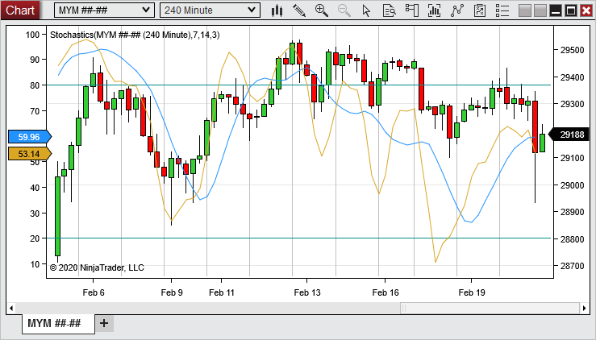
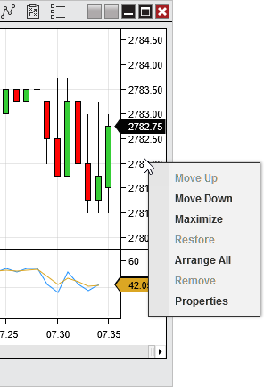
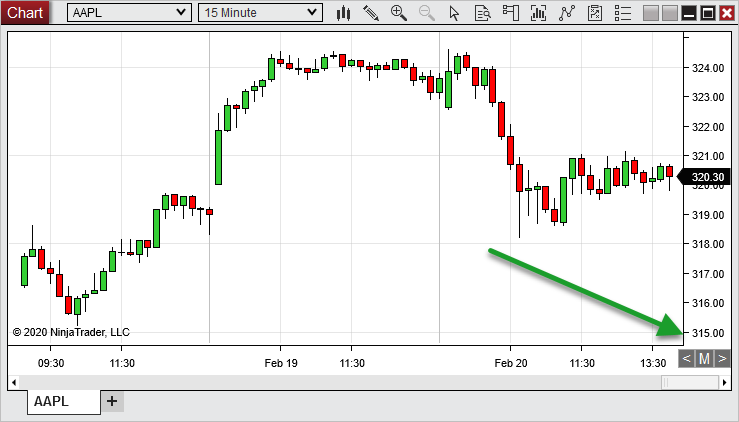

|
<< Click to Display Table of Contents >> Chart Panels |


|
Chart Panels
|
<< Click to Display Table of Contents >> Chart Panels |
|
A chart is comprised of Panels that contain chart objects such as Data Series, Indicators and Drawing Tools. Panels are added to a chart during the process of adding/editing a Data Series or Indicator. Every Panel has three independent scales to which you can associate a chart object to. Each scale can be uniquely customized via the panel properties (see "Understanding panel properties" sub-section below for more information).
Panel ScalesWhen adding a Data Series or Indicator to a chart, you can set the Scale justification property to align the chart object to any of the following scales within the Panel:
•Left •Right •Overlay
With the exception of the Overlay scale, a price scale will only be displayed in a Panel if there is one or more chart objects justified to it. The Overlay scale does not have a visible price scale however, any chart objects justified to this scale will display their price markers first on the Right scale if one exists otherwise they are displayed on the Left scale. All scales can be shared by multiple chart objects.

The image above depicts the continuous ES futures contract justified to the Right scale and a Stochastics indicator justified to the Left scale within the same Panel.
Panel Context MenuRight mouse click within the price scale to access the panel context menu.

The following actions are available:
Maximized panel displaySelecting Maximize from the panel context will change selected panel to be the only displayed panel on the chart tab. Using the left facing arrow "<" or right facing arrow ">" will navigate through each panel on the chart in a maximized display. Selecting the "M" button will restore the panels to their original default display.

The image above depicts the continuous ES futures 1-minute Data Series panel which has been Maximized and displays the controls available to navigate through a maximized panel display. |
 Understanding panel properties
Understanding panel properties
Panel PropertiesThe Panel Properties menu can be opened by double left mouse clicking within the price scale or selecting the Properties menu via the Panel Context menu discussed above. The Panel Properties window will list the properties below grouped by each scale that is currently active on the Panel.
The following properties can be adjusted:
|